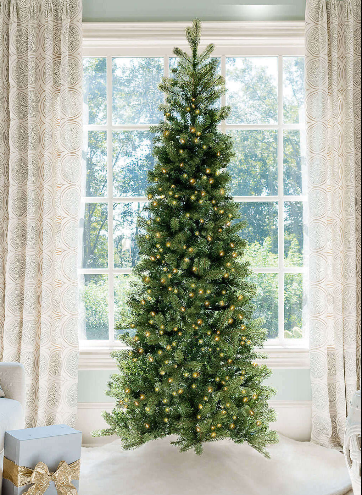

Best Artificial Christmas Trees for 2026

Our top choices combine lifelike foliage, premium construction, easy setup, and brilliant integrated lighting.

Our top choices combine lifelike foliage, premium construction, easy setup, and brilliant integrated lighting.